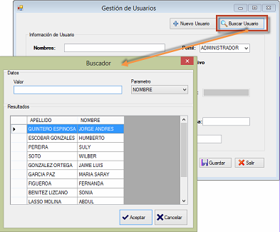

Con este formulario se puede agregar al sistema información de nuevos usuarios así
como actualizar información de usuarios existentes.
Para agregar un nuevo usuario de clic en el botón Agregar Usuarioy llene los campos de
texto que se indican, seleccione del combo el tipo de Perfil que tendrá el nuevo usuario,
para confirmar la acción de clic en el botónGuardar.

Ventana Buscar Usuario.
Si desea modificar información de un usuario existente, puede dar clic en el botón Buscar Usuario. Seleccione el usuario (si es una lista bastante larga de usuarios puede
buscar por el parámetro nombre o apellido) y luego realice la acción de edición sobre la
información desplegada. Confirme dando clic en el botón Guardar.